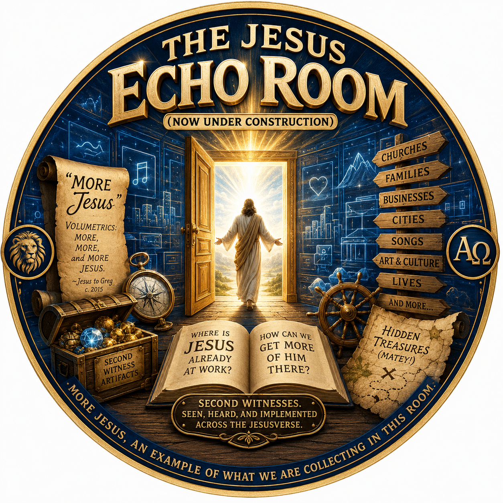

THE JESUS ECHO ROOM


What We Are Collecting In This Room
MORE JESUS is an example of what we are collecting in this room.
Turns out, Jesus is building a special, virtual ROOM for me, in My Jesus-Greg WORLD in the JesusVerse.
And I am helping Him.
Into this new ROOM Jesus and I are gathering certain s.e.c.o.n.d w.i.t.n.e.s.s. artifacts.
Amen.
These be hidden treasures, matey!
They are things that Jesus secretly told me, revealed to me, had me do, had me see, had me preach, or otherwise placed on my radar—things that previously were not part of my life, not part of my LDS religious culture, and not part of my upbringing.
But now, these same things are beginning to be heard, seen, echoed, and implemented in other places.
Meaning, Jesus is making these things go viral, and wants me to notice and take delight.
The Original Whisper
For example, sometime after 2015 or so, Jesus whispered to me the answer to a question that He, Jesus, had asked me in my mind:
Alma 34:34 and Alma 18:34-35 style.
His answer was clear and simple:
That term has haunted my mouth and heart ever since.
Hallelujah.
A good haunt.
A MORE Jesus Second Witness
Yesterday, June 14, 2026, Jesus gave a MORE Jesus second witness, and thereby an artifact for the Jesus Echo Room.
This particular second witness was noticed by my wife while she was taking a sickation with Jesus — watching scripture videos with Jesus and the angels, while He had her doing healing time with the angels, I imagine.
It is in the form of this video:
Facebook Post
A beautiful phrase Jesus uttered to me about 10 years ago:
It is a simple, useful phrase to describe what the world needs now.
The phrase may be rising, perhaps even in LDS circles.
For me, it is a second witness to the exciting rise of the Latter-Day Jesus Movement, like the one that occurred in the late 1960s and early 1970s.
Jesus Season is starting to break forth, for those who have eyes to see.
MORE Jesus
“MORE Jesus.”
A beautiful phrase Jesus whispered to me about ten years ago.
Simple. Useful. Memorable.
A phrase that, in many ways, describes what the world needs now.
I have begun noticing the phrase appearing more often, particularly in LDS circles. To me, it serves as a second witness that something larger is happening.
I believe we are witnessing the early stirrings of a latter-day Jesus Movement, not unlike the Jesus Movement that emerged in the late 1960s and early 1970s.
Jesus Season is beginning to break forth, for those who have eyes to see.
Do You Want MORE Jesus?
The phrase MORE Jesus is more than catchy.
More than clever.
More than a slogan.
It points to a fundamental truth about mortality.
Most people already have Jesus in their lives.
They know it.
The real question is not whether a person has Jesus.
Do you want MORE Jesus?
More of His influence.
More of His presence.
More of His Spirit.
More of His peace.
More of His truth.
More of His involvement in your ordinary Tuesday afternoon.
Zion Coalition And MORE Jesus
The phrase shifts the conversation away from labels and camps and tribes.
It is less concerned with who is “in” and who is “out.”
It asks a simpler question:
This has become one of the guiding ideas behind Zion Coalition.
At Zion Coalition, we are interested in finding Jesus wherever He is already working and then helping that thing receive MORE Jesus.
A church can receive MORE Jesus.
A family can receive MORE Jesus.
A business can receive MORE Jesus.
A city can receive MORE Jesus.
A song can receive MORE Jesus.
An art project can receive MORE Jesus.
A life can receive MORE Jesus.
Redeeming What Already Exists
Take, for example, a song recorded in 1992.
Most people would not naturally think of Jesus when they hear it.
Yet from a Zion perspective, Jesus was already involved.
He was present in every good gift, every creative spark, every beautiful note, and every honest longing embedded within the work.
Then, thirty years later, that same song can be revisited, reframed, redeemed, and infused with MORE Jesus.
Not because Jesus was absent before.
Because He was already there.
The song simply received MORE of Him.
The Pattern
That pattern appears everywhere once you start looking for it.
Jesus is not merely building things from scratch.
Often He is redeeming, reclaiming, transforming, enlarging, and sanctifying things that already exist.
The story of Zion may not be a story of replacing everything.
It may be a story of giving everything that is lovely, virtuous, praiseworthy, and true...
The Question
The question is whether we desire MORE Jesus.”